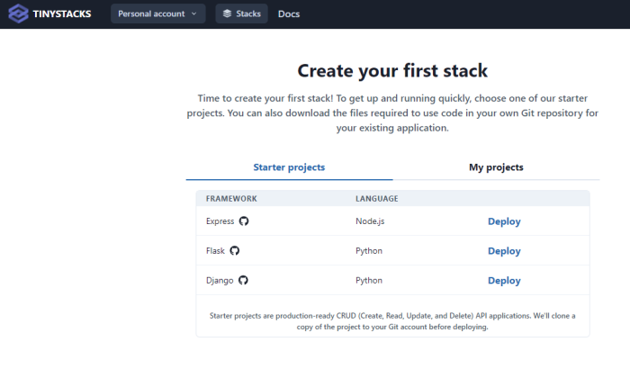
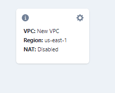
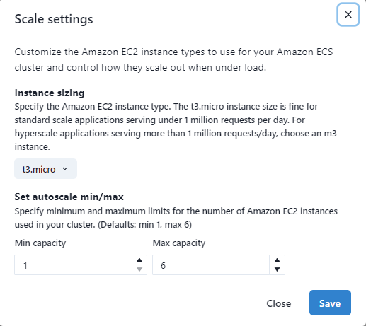

Create your first stack
The following guide is for first-time TinyStacks users. Follow these instructions to launch one of our sample applications on AWS in under 15 minutes!
Prerequisites
Before you begin this guide, make sure you have set up your AWS and Git service connections as outlined in Configure AWS and Git service connections.
Select a starter project
Next, you'll be prompted to select a project. You can either select a TinyStacks starter project or use your own project. For this guide, we'll be using a starter project, so go ahead and click the Starter projects button.
The TinyStacks starter projects are simple Create/Read/Update/Delete (CRUD) database applications written in the application framework of your choice. You can click the name of any starter project in the window below to see its repository on GitHub and check out its README, which gives a detailed description of the app's code and deployment architecture.

Once you select a project, TinyStacks will copy its code into your Git account, where you can use it as a basis for further development.
For this guide, let's create an Express project. Next to Express in the window above, click Deploy.
On the next screen, you'll be prompted to give your project a name. Choose a simple, short name that's 20 characters or less. (The name will be used as a prefix for some of the resources in your AWS account, so we want to keep it short to avoid going over naming length limits in AWS.)

Choosing serverless or container deployment
You have one more step to go and then you're ready to launch your stack! After clicking Deploy, you'll see the screen below. Here, you need to select whether to launch your application using either serverless or container architecture.

To keep costs low for this initial walkthrough, select Serverless.
For more information on which architecture best suites your application, see Architecture and Serverless. (You can also see our detailed blog post on the key differences between Lambda and Docker.)
Further customizing your deployment
This screen visualizes all of the AWS resources that TinyStacks will use or create on your behalf. These components and what they contribute to your stack are discussed in detail in our architectural guide. Briefly, they include:
- Your Git repo (either GitHub or GitLab) that holds your application code.
- AWS CodeBuild to build and deploy your project as a Docker container.
- An Amazon Elastic Container Repository (ECR) repo for storing your Docker container's versions.
- An Amazon Elastic Container Service (ECS) cluster for hosting your running Docker containers.
- Amazon API Gateway for routing traffic to your application's exposed endpoints.
- Amazon CloudWatch for monitoring performance and storing application logs.
- An optional database for storing application data.
Additionally, you can see and configure several additional options:
- The AWS pricing breakdown gives you a sense of what you'll per month for your stack in its current configuration.
- You can define Environment variables as name-value pairs that will be exposed as environment variables to your running application's Docker container.
If a tile has a gear icon in the upper right corner, you can click it to configure advanced options for that tile. Configurable options include the following.
Configure Your VPC (optional for serverless)
If you choose container architecture, TinyStacks will by default create a new, secure VPC with three public and three isolated subnets. Your application will run into the isolated subnets.

You can click the gear icon to opt instead to use your own pre-created VPC from your AWS account. You can use your own VPC that you created or a VPC that TinyStacks created for one of your other stacks.

You can also option to turn the isolated subnets into private subnets by adding a NAT Gateway. This will enable applications running in these subnets to make calls out to the public Internet. You should enable this if your application has an external dependency, such as on a publicly hosted Web service. (Note: You will incur an hourly charge for your NAT Gateway as well as data transfer charges for every 1GB of data that flows to the Internet or to compute capacity in a different Availability Zone. See the AWS NAT Gateway Pricing page for more details.)

Note that serverless applications, by default, do not run in a VPC. You can, however, opt to run them in a VPC that's already defined in your AWS account.
Add a Database
Click Enable to create an Amazon RDS Postgres database, an Amazon RDS MySQL database, or a Redis in-memory database for your account. Use the settings option to select an existing database instead and to configure other database-related options.
You can add one database at stack creation time. After the stack's first stage finishes deploying, you can add other databases of different types via the stack's Settings page. For more information, see Databases.
Amazon ECS (container architecture only)
Configure build and scale settings for your Amazon ECS cluster, such as the size of the Amazon EC2 instances used in your cluster. (If you're not familiar with these settings, you can leave them as the default for now.)

AWS Lambda (serverless architecture only)
Configure scale settings for your AWS Lambda function, including the memory available to your application and the runtime timeout setting. (If you're not familiar with these settings, you can leave them as the default for now.)

Front-End Routing
Choose between using Amazon API Gateway or Application Load Balancer for front end application routing.
You can change any of these options now or change them later, after your original deployment. Your stack will also build as is, without any additional configuration. For now, start the creation of your first stack by clicking Build.
Testing your stack
Your application's environment will take a few minutes to build. We'll present detailed status updates in the upper-right corner of this as we build out your stack.
Once it's done, you'll be taken to the Stacks page on your TinyStacks account, where you can see your running stack listed. You can also set the minimum and maximum number of instances of your container that ECS should run in response to scale out and scale in events. (For more information, see Autoscaling.)

Click on your stack's name to navigate to the Stack Details page.

This page shows your stack and all of the stages you've defined. The initial stack creation process creates a single stage named dev. You can use the Add stage button to add more stages at any time.
For now, let's tets out the dev stack and ensure it's working. On the lower right corner of the dev box, click Copy endpoint. Then, open a new tab in your Web browser, paste in the copied URL, and press Enter. You should navigate to the Express application's ping page, which should return a string reading Healthy connection.

You can also test other endpoints of the API as defined by the Express app README. For example, to add an item to the application's memory, you can use the following command on Linux systems. Be sure to replace my-domain-name with the domain portion of your application's URL, which will be of the form unique-id.execute-api.us-east-1.amazonaws.com:
curl -H "Content-Type: application/json" -X PUT -d '{"title":"my title", "content" : "my content"}' "https://my-domain-name/item"
On Windows Powershell, use the following command:
$item = @{
title="my title"
content="my content"
}
$json = $item | ConvertTo-Json
$response = Invoke-WebRequest 'https://my-domain-name/local-item' -Method Put -Body $json -ContentType 'application/json' -UseBasicParsing
If everything is configured correctly, you'll receive a 200 HTTP response status code for the operation.
Congratulations - you've deployed your first stack!
Push your first commit
Your stack is configured to deploy any changes you make to your code automatically to your dev stage. To see this in action, let's make a small change to your code.
Navigate to your Git repo. You can do this easily by clicking on the GitHub or GitLab icon on your stack's tile on the Stack Details page.

In the repository, navigate to the file src/server.ts. Copy the /ping method and create a new method called /pong. Return a custom message from the method in the response:
app.get("/ping", (req, res) => {
res.status(200).send("Setting a custom message");
});
Next, commit your change. In the GitHub UI, you can do this by clicking the Commit changes button at the bottom of the page you're editing.

Return to TinyStacks and to the Stack Details page for your stack. Within a couple of minutes, you should see that TinyStacks has picked up the change to your application and is applying the changes to your stack.

The first tile will spin while it is building your changes into a new Docker container. Then, you will see the dev stage update as the change is deployed. Wait until the change has propagated to your dev stage. Then, test the /pong URL with cUrl to see your new endpoint. On Linux, run the following command:
curl https://my-domain-name/pong
On Windows Powershell, use:
curl https://my-domain-name/pong -UseBasicParsing